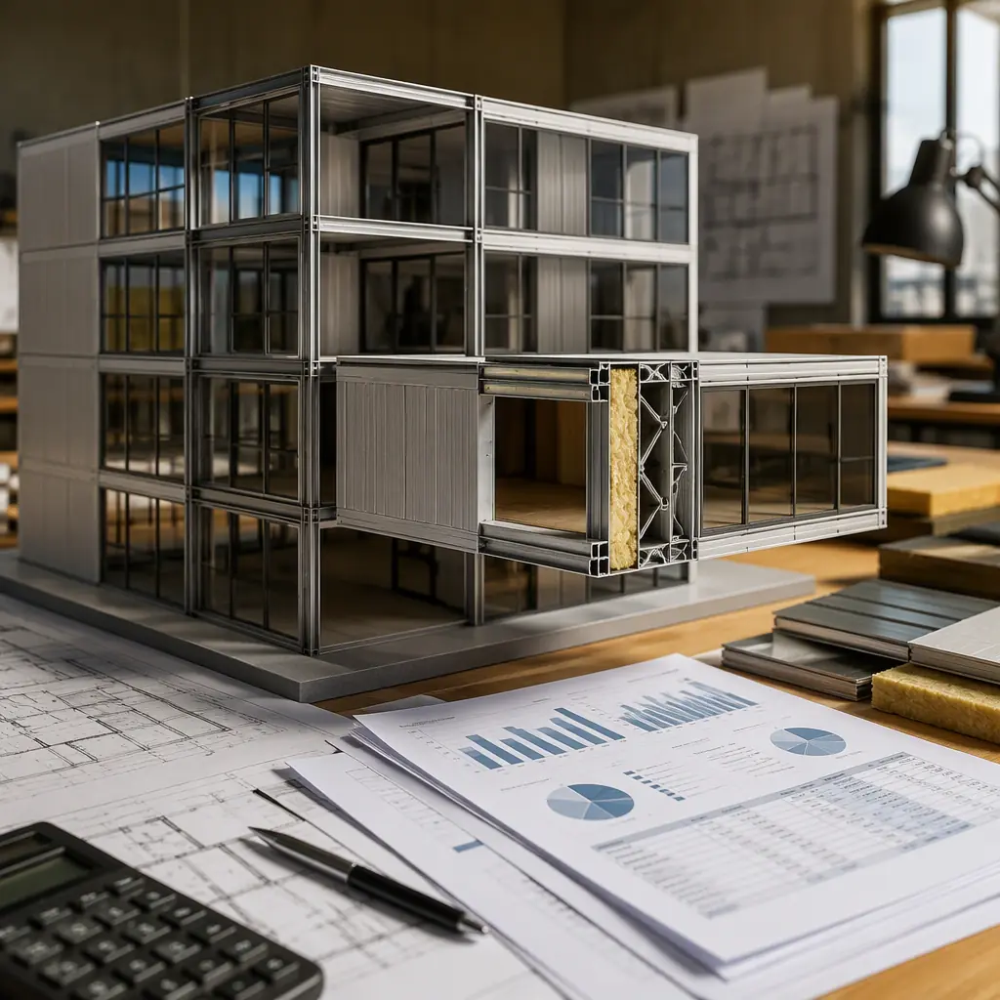
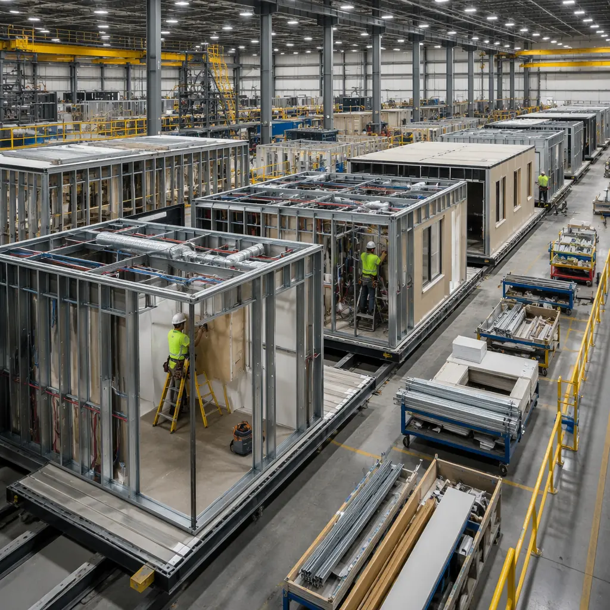
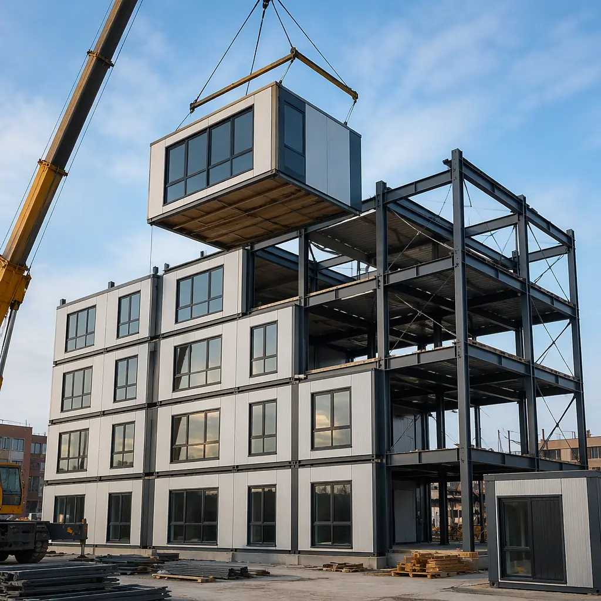
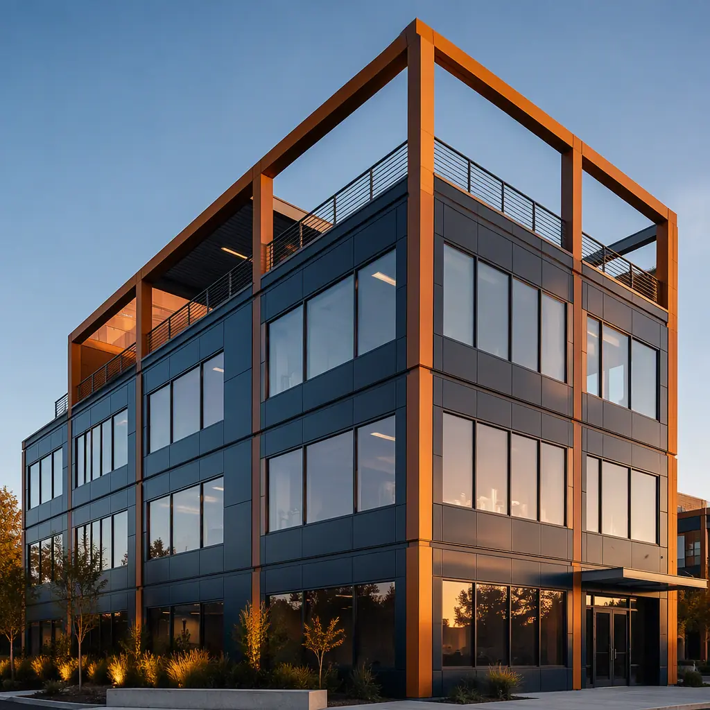

Most developers' first question about modular construction is "What does it cost per square foot?" The per-square-foot number is easy to find — $213-$302/sq ft for mid-rise steel modular commercial construction in 2026 — but it answers only half the question. The number that matters for investment decisions is the total project cost: the sum of hard costs, soft costs, site costs, transportation, contingencies, and the cost of capital during construction. Developers who budget from per-square-foot estimates alone routinely discover 15-25% cost overruns during project execution — not because modular construction is more expensive than expected, but because the total cost picture includes line items that per-square-foot pricing does not capture. This guide provides a complete budgeting framework for modular construction projects, based on MODURA's project cost data from 2024-2026, so you can build a pro forma that your investors and lenders will underwrite with confidence.

The Total Cost Equation: 8 Line Items Beyond Per-Square-Foot Pricing
A modular construction project budget comprises eight cost categories. The per-square-foot module fabrication cost — the number most developers focus on — is only one of them, typically representing 45-55% of total project cost. Here is the complete cost structure for a representative 60,000 sq ft, 5-story steel modular multi-family building in a mid-tier US market:
| Cost Category | Budget Range | % of Total | Key Variable |
|---|---|---|---|
| 1. Module fabrication (steel frame, finishes, MEP) | $8.4M–$11.1M | 48% | Finish level, module count |
| 2. Site preparation & foundation | $1.4M–$2.2M | 9% | Soil conditions, grading |
| 3. Transportation & crane setting | $0.6M–$1.1M | 4% | Distance from factory |
| 4. Site finishing (corridors, lobby, MEP connections) | $1.8M–$2.5M | 11% | Common area scope |
| 5. Design, engineering & permitting | $0.9M–$1.3M | 6% | Jurisdiction review time |
| 6. Contingency (design + construction) | $1.0M–$1.6M | 7% | Design maturity at contract |
| 7. Soft costs (financing, legal, insurance, fees) | $1.1M–$1.8M | 8% | Loan structure, jurisdiction |
| 8. Cost of capital during construction | $0.5M–$0.9M | 4% | Construction duration |
| TOTAL PROJECT COST | $15.7M–$22.5M | 100% | $262–$375/sq ft all-in |
For comparison, an equivalent site-built building in the same market would range $17.8M-$24.1M ($297-$402/sq ft all-in), driven by 40-60% longer construction duration (increasing cost of capital by $300K-$500K) and higher general conditions costs (supervision, security, temporary utilities for a longer site duration). Our cost per square foot guide provides a deeper per-square-foot breakdown by building type, but the total project cost framework above is what lenders underwrite — and it is where modular's schedule compression creates cost savings that per-square-foot comparisons miss entirely.

Contingency Budgeting: Why Modular Projects Carry Lower Contingency — and Where to Keep It
Construction contingency is the budget line item that developers hope they never use but always need. In traditional site-built construction, contingency typically runs 10-15% of hard costs at the design development stage and 5-8% at the construction document stage. Modular construction fundamentally changes the contingency equation because the largest source of site-built cost variance — field labor productivity and weather delays — is eliminated for 80-90% of the building's labor hours, which occur inside a factory.
Based on MODURA's project actuals, modular projects carry 7-10% total contingency at design development (versus 12-15% for site-built) and 5-7% at construction documents (versus 8-10% for site-built). The contingency that remains in modular projects is concentrated in three areas:
- Site conditions (40% of contingency allocation). Unexpected soil conditions requiring foundation redesign, utility conflicts discovered during excavation, or site access constraints that require crane substitution. These risks are identical to site-built construction and should be budgeted at the same rate. Our foundation systems guide covers site investigation requirements.
- Regulatory and permitting delays (30% of contingency allocation). Building departments unfamiliar with modular construction may require additional review cycles, third-party engineering reports, or state-level modular program approvals. In jurisdictions with established modular review protocols (California, Colorado, Washington, Texas, New York), this risk is minimal. In jurisdictions without modular review infrastructure, developers should add 4-8 weeks to the permitting timeline and 1-2% to contingency. Our permitting and zoning guide provides a jurisdiction readiness checklist.
- Supplier and logistics disruption (30% of contingency allocation). Module transportation is the most exposed element of modular construction to external disruption. A bridge closure on the primary transport route, a state permit processing delay, or a crane mechanical failure can delay module setting by 1-2 weeks. The financial impact is modest — typically $15,000-$30,000 per week for a mid-size project — but it must be budgeted. Our transportation logistics guide covers route planning and contingency strategies.
What modular projects do NOT need contingency for: factory labor productivity (controlled environment, standard production rates), material waste (factory purchasing eliminates site over-ordering and theft), weather delays (factory production is weather-independent), and subcontractor default (the manufacturer is a single-point-responsibility entity with audited financials). These four risk categories represent 35-50% of the contingency in a site-built project budget — and they essentially disappear in modular. For developers, this means that a modular project's 7% contingency is as protective as a site-built project's 12% contingency, because it is allocated against real risks rather than spread across every possible source of variance. Our project risk reduction guide provides a side-by-side risk comparison.
The Schedule-Cost Interaction: How 14 Months of Accelerated Occupancy Changes the Math
The single largest financial impact of modular construction — larger than any per-square-foot cost difference — is the interaction between construction schedule and cost of capital. A 60-unit multi-family modular building that delivers occupancy in 7 months versus 18-21 months for site-built generates 11-14 months of additional rental revenue, reduces construction loan interest by 40-55%, and accelerates the developer's return of equity by 12-18 months. Here is the financial math:
| Financial Metric | Modular (7-month build) | Site-Built (19-month build) | Modular Advantage |
|---|---|---|---|
| Construction loan period | 7 months | 19 months | -12 months |
| Construction loan interest (8% on $13M avg balance) | $607,000 | $1,647,000 | -$1,040,000 |
| Additional rent during accelerated period | — | — | +$1,080,000 |
| Net schedule-driven financial impact | — | — | +$2,120,000 |
The $2.1 million schedule-driven advantage represents approximately 12% of the project's total cost. In other words, even if modular construction cost 10% more per square foot than site-built, the schedule advantage alone would make it the better financial decision for this project. In reality, modular typically costs 5-10% less per square foot, meaning the total financial advantage — combining lower hard costs, lower financing costs, and accelerated revenue — approaches 18-22% of project cost for well-suited projects. Our ROI developer's guide provides the full financial model and sensitivity analysis.

Hidden Costs That Surprise First-Time Modular Developers — and How to Avoid Them
Every construction method has cost items that experienced practitioners know to budget and first-timers discover too late. For modular construction, these are the five most common budget omissions:
- Module marriage line finishing. Where two modules meet, there is a "marriage line" — the structural and architectural joint between adjacent factory-built boxes. This joint requires site finishing: drywall tape and mud, flooring transition strips, ceiling grid alignment, and MEP connections across the module boundary. Budget $3-5 per linear foot of marriage line — typically $25,000-$40,000 for a mid-rise building — as a separate site-finishing line item. Factory QC minimizes but does not eliminate this work.
- Fire stopping at module joints. Building code requires fire-rated sealing at every module-to-module joint, floor-to-floor joint, and module-to-corridor joint. This is labor-intensive site work requiring UL-listed firestop systems installed by certified applicators. Budget $1.50-3.00 per linear foot of module perimeter — typically $15,000-$30,000 for a 60-module building. Our fire safety guide covers the specific UL assemblies required.
- Temporary weather protection during setting. While modules are weather-tight individually, the building is not weather-tight until all modules are set and the roof membrane is continuous. A two-week setting period during rainy season requires temporary roof covering and module-top protection. Budget $15,000-$25,000 for temporary weather protection if setting occurs during the wet season in your region.
- Module handling and storage if setting sequence is disrupted. Modules must be set in a specific sequence determined by the structural connection design. If a module arrives out of sequence or site conditions delay setting, modules may need to be stored off-site or double-handled on-site. Budget $5,000-$10,000 for handling contingency — deliberately less than site-built because factory production schedules are far more reliable than site subcontractor schedules.
- Third-party modular inspection fees. Most states require a third-party inspection agency (TPIA) to approve modular construction — either the state modular program itself (California DSA, Texas IHB, etc.) or an accredited agency (ICC NTA, RADCO, PFS). TPIA fees range from $12,000-$25,000 per project depending on scope and number of inspections. This is a modular-specific cost with no site-built equivalent, and it should be budgeted as a separate soft cost line item. Our warranties and inspections guide covers TPIA requirements by jurisdiction.
Building a Lender-Ready Modular Construction Budget
Lenders underwrite construction projects based on the total project cost, not the per-square-foot module price. A lender-ready modular construction budget includes all eight cost categories listed above, a clearly identified contingency allocation with justification for the lower modular contingency rate, and — critically — a draw schedule that matches modular cash flow (30-40% of contract value during factory production, released in milestone payments tied to production completion percentages). Developers who present a budget structured this way, with actual project data from a manufacturer with a track record, find that lenders underwrite modular projects on the same terms as site-built — and in some cases, at more favorable rates, because the shorter construction period reduces the lender's exposure to interest rate risk, market shifts, and contractor default during the construction phase. Our financing guide and lending guide provide sample lender packages and term sheet negotiation strategies.

The Budget That Gets Built
Modular construction cost planning is fundamentally about shifting the developer's focus from per-square-foot module pricing to total project economics. The per-square-foot number matters — it is the largest single line item. But the 50% schedule compression, the 40-55% reduction in construction financing costs, the 12-18 months of accelerated revenue, and the near-elimination of weather and labor-productivity contingency are what transform a per-square-foot comparison into a project-level financial decision that modular wins decisively. Developers who budget for the total project — not just the module — are the ones who capture modular's full financial advantage.